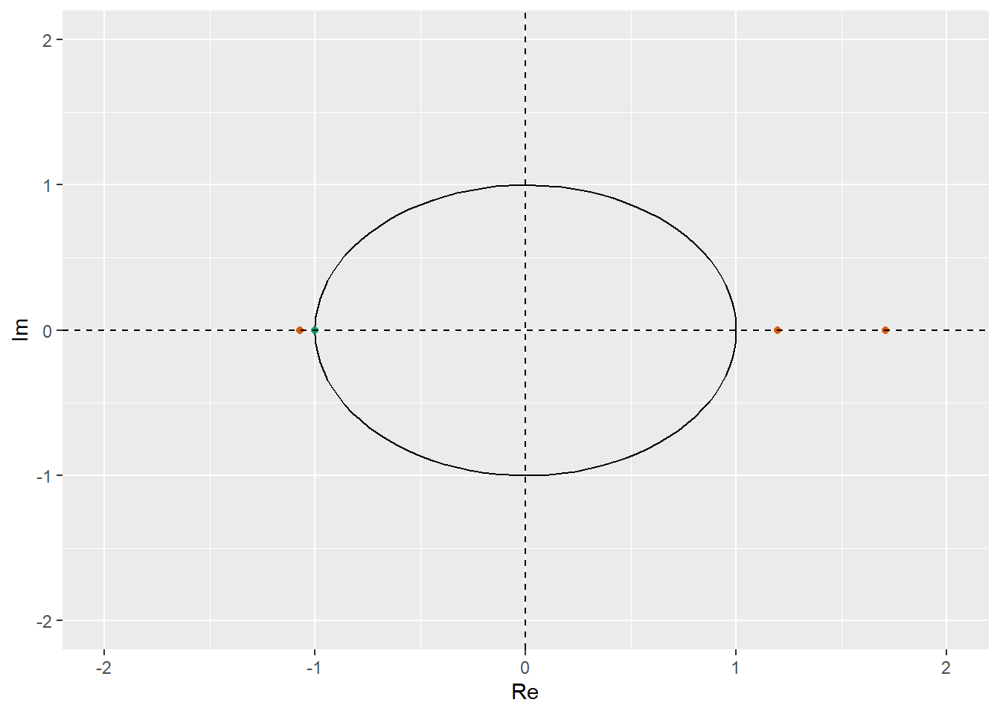

Cvičenie 4 - Zostavenie a testovanie ARIMA modelov
1 Potrebé knižnice pre cvičenie 4
library(astsa)
library(urca)
library(ggfortify)
library(ggplot2)2 Minimálna kostra - príklad 2
Cieľom bude nájdenie vhodného ARIMA modelu pre dáta (na skúške bývajú dáta, ako tieto naše, ktoré sa dajú modelovať ako ARIMA proces, pričom p ani q nie sú väčšie ako 5)
Majme data z knižnice astsa:
y <- econ5[,"unemp"]
autoplot(y)
Zadanie bude nasledovné:
- Vysvetlite koľko krát a prečo sa majú dáta diferencovať. Čiže pre každý časový rad (pôvodné dáta, prvé diferencie, druhé diferencie, …) napíšte, či ste dáta diferencovali a prečo. Skončite tým, že určitý časový rad nebude treba už viac diferencovať
- Testovanie jednotkového koreňa. V poslednom kroku nastala situácia,
že v dátach nebol trend, ani jednotkový koreň, a preto ich nebolo nutné
diferencovať. Podrobne vysvetlite, čo sa tam dialo:
Napíšte s akými parametrami ADF testu ste dáta testovali a aká regresia sa tam odhadla.- Aká hypotéza o koeficientoch regresie sa testuje?
- Odvoďte, že táto hypotéza predstavuje hypotézu o jednotkovom koreni daného časového radu.
- Kedy túto hypotézu zamietame (ako vyzerá kritériu založené na testovej štatistike a kritickej hodnote)?
- Čo vyšlo v našom prípade (zamietame vs. nezamietame), čo to znamená pre diferencovanie nášho časového radu (diferencovať vs. nediferencovať)?
- Nájdite vhodný ARIMA model pre dáta
y. Požiadavky sú: stacionarita, invertovateľnosť a p-hodnoty Ljung-Boxovho testu nad 5%.
Riešenie:
- Dáta podľa grafu nevykazujú prítomnosť trendu. To znamená, že dáta
yotestujeme už iba na prítomnosť jednotkového koreňa. Stredná hodnota dát vyzerá byť niekde v okolí hodnoty 5, preto zvolímetype = "drift". Je dôležité zvoliť primeraný počet lagov,aby sa nám nestalo, že všetky lagy sa nám dostanú do výsledného modelu. V takom prípade nevieme, či je to najlepší možný model pre naše dáta podľa IC alebo sme ho dostali iba kvôli tomu, že sme väčší počet lagov nepovolili. V našom prípade zvolímelags = 4. IC zvolíme napríkladselectlags = "BIC".
summary(ur.df(y, lags = 5, selectlags = "BIC", type = "drift"))##
## ###############################################
## # Augmented Dickey-Fuller Test Unit Root Test #
## ###############################################
##
## Test regression drift
##
##
## Call:
## lm(formula = z.diff ~ z.lag.1 + 1 + z.diff.lag)
##
## Residuals:
## Min 1Q Median 3Q Max
## -1.82251 -0.22532 -0.02061 0.24447 1.89015
##
## Coefficients:
## Estimate Std. Error t value Pr(>|t|)
## (Intercept) 0.34661 0.12149 2.853 0.00493 **
## z.lag.1 -0.06217 0.02033 -3.059 0.00263 **
## z.diff.lag 0.47257 0.06930 6.819 2.03e-10 ***
## ---
## Signif. codes: 0 '***' 0.001 '**' 0.01 '*' 0.05 '.' 0.1 ' ' 1
##
## Residual standard error: 0.4275 on 152 degrees of freedom
## Multiple R-squared: 0.2507, Adjusted R-squared: 0.2408
## F-statistic: 25.42 on 2 and 152 DF, p-value: 2.987e-10
##
##
## Value of test-statistic is: -3.0585 4.7181
##
## Critical values for test statistics:
## 1pct 5pct 10pct
## tau2 -3.46 -2.88 -2.57
## phi1 6.52 4.63 3.81V dátach teda nie je prítomný jednotkový koreň (test ho zamietol na hladine významnosti 5%), preto ich nebudeme ďalej diferencovať.
Regresia, ktorá sa odhadla v teste \[ \Delta z_{t} = \alpha + c_{1}z_{t-1}+c_{2}\Delta z_{t-1} + e_{t}\]
Hypotéza, ktorá sa testuje pre koeficienty z regresie \[ H_{0}: c_{1} = 0 \;vs\; H_{1}: c_{1} < 0 \]
Odvodenie, že hypotéza predstavuje aj hypotézu o jednotkovom koreni daného časového radu \[ \Delta z_{t} = \alpha + c_{1}z_{t-1}+c_{2}\Delta z_{t-1} + e_{t}\] \[ z_{t}- z_{t-1}= \alpha + c_{1}z_{t-1}+c_{2}(z_{t-1}-z_{t-2}) + e_{t}\] \[ z_{t}= \alpha + (1+c_{1}+c_{2})z_{t-1}+(-c_{2})z_{t-2} + e_{t}\] \[ [1-(1+c_{1}+c_{2})L+c_{2}L^{2}]z_{t}= \alpha + e_{t}\]
Ak by daný polynóm \(1-(1+c_{1}+c_{2})L+c_{2}L^{2}\) mal jednotkový koreň, platilo by \[1-(1+c_{1}+c_{2})+c_{2} = 0 \] respektíve \[-(1+c_{1}+c_{2})+c_{2} = -1 \] z čoho po úprave dostávame, že \(c_{1} = 0\). Vidíme, že hypotéza o testovaní koeficientu \(c_{1}\) z regresie, je totožná s hypotézou o testovaní jednotkového koreňa.
Hypotézu zamietame ak je testová štatistika (
test-statistic is: -3.4904) menšia ako sú kritické hodnoty(pre náš prípad máme kritické hodnoty dané):
## 1pct 5pct 10pct
## tau2 -3.51 -2.89 -2.58
V našom prípade výšlo, že testová štatistika je na hladine významnosti 5% menšia ako kritická hodnota, z toho dôvodu zamietame hypotézu \(H_{0}\) a prijímame hypotézu \(H_{1}\). Znamená to, že v dátach nie je prítomný jednotkový koreň, teda dáta nemusíme diferencovať.
Hľadanie vhodného ARIMA modelu
acf2(y)
## [,1] [,2] [,3] [,4] [,5] [,6] [,7] [,8] [,9] [,10] [,11] [,12] [,13]
## ACF 0.95 0.86 0.76 0.66 0.59 0.54 0.51 0.48 0.46 0.44 0.41 0.38 0.36
## PACF 0.95 -0.48 -0.01 0.12 0.16 -0.03 0.05 -0.10 0.16 -0.09 0.01 0.01 0.10
## [,14] [,15] [,16] [,17] [,18] [,19] [,20] [,21] [,22] [,23]
## ACF 0.34 0.34 0.33 0.33 0.31 0.29 0.25 0.21 0.18 0.14
## PACF -0.03 0.11 -0.08 -0.01 -0.09 -0.01 0.00 -0.03 -0.03 -0.02- Podľa ACF/PACF vyzerá, že vhodný model pre naše dáta by mohol byť AR(2). Dôvod je ten, že PACF(k), pre k > 2 vyzerá byť nulová a ACF je nenulová a postupne klesá.
model.y <- capture.output(sarima(y,2,0,0)) # ked chceme iba grafy a nevypisovat konvergenciu ani summary modelumodel.y <- sarima(y,2,0,0, details = FALSE)
model.y## $fit
##
## Call:
## arima(x = xdata, order = c(p, d, q), seasonal = list(order = c(P, D, Q), period = S),
## xreg = xmean, include.mean = FALSE, transform.pars = trans, fixed = fixed,
## optim.control = list(trace = trc, REPORT = 1, reltol = tol))
##
## Coefficients:
## ar1 ar2 xmean
## 1.4389 -0.5064 5.6034
## s.e. 0.0674 0.0677 0.4816
##
## sigma^2 estimated as 0.1829: log likelihood = -93.22, aic = 194.45
##
## $degrees_of_freedom
## [1] 158
##
## $ttable
## Estimate SE t.value p.value
## ar1 1.4389 0.0674 21.3471 0
## ar2 -0.5064 0.0677 -7.4840 0
## xmean 5.6034 0.4816 11.6340 0
##
## $AIC
## [1] 1.207742
##
## $AICc
## [1] 1.208692
##
## $BIC
## [1] 1.284299P-hodnoty Ljung-Boxovho testu sú viac ako 5%. Invertovateľnosť
netreba overovať, keďže nemáme MA členy. Overíme ešte
stacionaritu.
Budeme počítať korene polynómu \(1-1.3667L + 0.5336 L^{2} = 0\), pričom tieto musia byť mimo jednotkový kruh.
polyroot(c(1,-1.3667,0.5336))## [1] 1.280641+0.483758i 1.280641-0.483758iabs(polyroot(c(1,-1.3667,0.5336)))## [1] 1.368964 1.3689642 komplexne združené korene v absolútnej hodnote viac ako 1, máme stacionárny proces.
2.1 Rovnaký koreň pre oba polynómy
Modelujme predchadzajúce dáta ako ARMA(3,1) proces
model.y <- capture.output(sarima(y,3,0,1)) # ked chceme iba grafy a nevypisovat konvergenciu ani summary modelu
model.y <- sarima(y,3,0,1, details = FALSE)
model.y## $fit
##
## Call:
## arima(x = xdata, order = c(p, d, q), seasonal = list(order = c(P, D, Q), period = S),
## xreg = xmean, include.mean = FALSE, transform.pars = trans, fixed = fixed,
## optim.control = list(trace = trc, REPORT = 1, reltol = tol))
##
## Coefficients:
## ar1 ar2 ar3 ma1 xmean
## 0.4894 0.8364 -0.4568 1.0000 5.6046
## s.e. 0.0705 0.0509 0.0710 0.0215 0.4875
##
## sigma^2 estimated as 0.1769: log likelihood = -91.47, aic = 194.95
##
## $degrees_of_freedom
## [1] 156
##
## $ttable
## Estimate SE t.value p.value
## ar1 0.4894 0.0705 6.9459 0
## ar2 0.8364 0.0509 16.4294 0
## ar3 -0.4568 0.0710 -6.4291 0
## ma1 1.0000 0.0215 46.6131 0
## xmean 5.6046 0.4875 11.4963 0
##
## $AIC
## [1] 1.210868
##
## $AICc
## [1] 1.213272
##
## $BIC
## [1] 1.325703Tento proces môžeme zapísať v tvare \[(1-0.4827L - 0.6355 L^{2} +0.4290L^{3})y_{t} = \delta + (1+0.9453L)u_{t}\]
Spočítajme si korene daných polynómov:
# alpha(L)
polyroot(c(1,-0.4827,-0.6355,0.4290))## [1] 1.327070+0.475874i -1.172789+0.000000i 1.327070-0.475874i# beta(L)
polyroot(c(1,0.9453))## [1] -1.057865+0iVykreslíme si ich do komplexnej roviny:
phi <- seq(0, 2*pi, length.out = 100)
cos.phi <- cos(phi)
sin.phi <- sin(phi)
ar.poly <- polyroot(c(1, -model.y$fit$coef[1:3]))
ma.poly <- polyroot(c(1, model.y$fit$coef[4]))
qplot(cos.phi, sin.phi, geom = "path")+
geom_point(aes(x = Re(ar.poly), y = Im(ar.poly)), color = "#D55E00")+
geom_point(aes(x = Re(ma.poly), y = Im(ma.poly)), color = "#009E73")+
geom_vline(xintercept = 0, linetype = "dashed")+
geom_hline(yintercept = 0, linetype = "dashed")+
xlab('Re') + ylab('Im')+
scale_y_continuous(limits = c(-2, 2))+
scale_x_continuous(limits = c(-2, 2)) Korene AR a MA časti vyšli blízko seba, z toho vyplýva, že by sme mali o 1 znížiť rád AR aj MA členov.
3 Ďalšie príklady
Zopakujte postup vyššie pre nasledovné dáta:
library(datasets)
y <- BJsalesdata("WWWusage")
y <- WWWusage
plot(y)library(datasets)
y <- window(WWWusage, start=1, end=70)
plot(y)library(astsa)
y <- window(log(oil), end=2008)
plot(y)library(astsa)
y <- log(gnp)
plot(y)library(astsa)
y <- ts(fmri$L9T2[1:100,3])
plot(y)library(fpp)
data(wmurders)
y <- wmurders
plot(y)library(fpp)
data(austa)
y <- austa
plot(y)library(forecast)
lambda <- BoxCox.lambda(usnetelec)
y <- BoxCox(usnetelec, lambda)
plot(y)library(forecast)
lambda <- BoxCox.lambda(usgdp)
y <- BoxCox(usgdp, lambda)
plot(y)library(forecast)
lambda <- BoxCox.lambda(mcopper)
y <-BoxCox(mcopper, lambda)
plot(y)